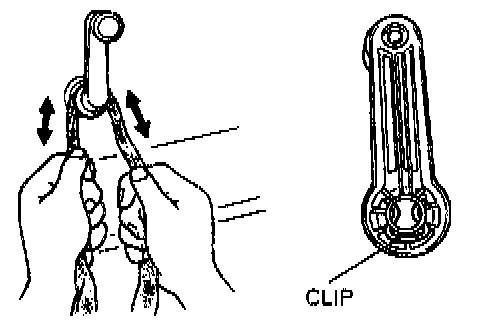
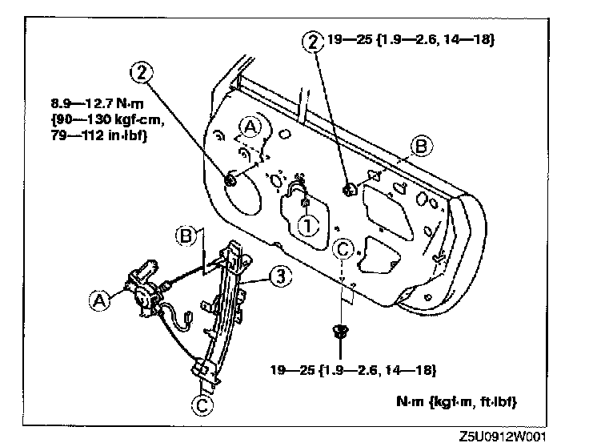
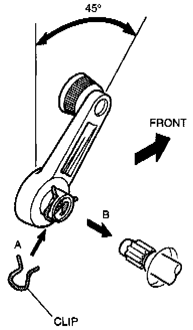

Manual Window Regulator Removal

Regulator Handle Removal Note
- Remove the regulator handle clip by using a rag as shown.
1. Remove the front glass guide.

2. Remove in the order indicated in the illustration.
3. Install in the reverse order of removal.
4. Adjust the door glass.

Regulator Handle Installation Note
1. Raise the front door glass fully.
2. Install the clip in the regulator handle (A).
3. Push the regulator handle as shown (B).